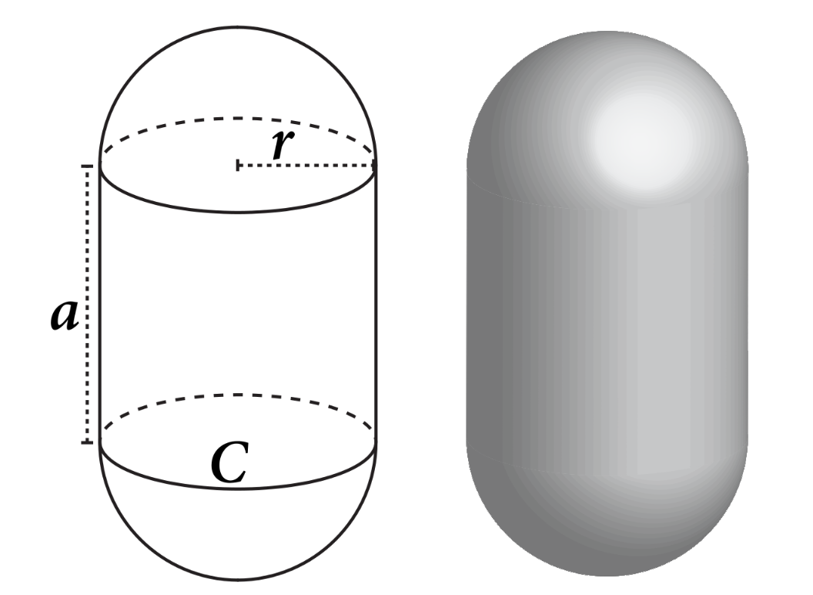
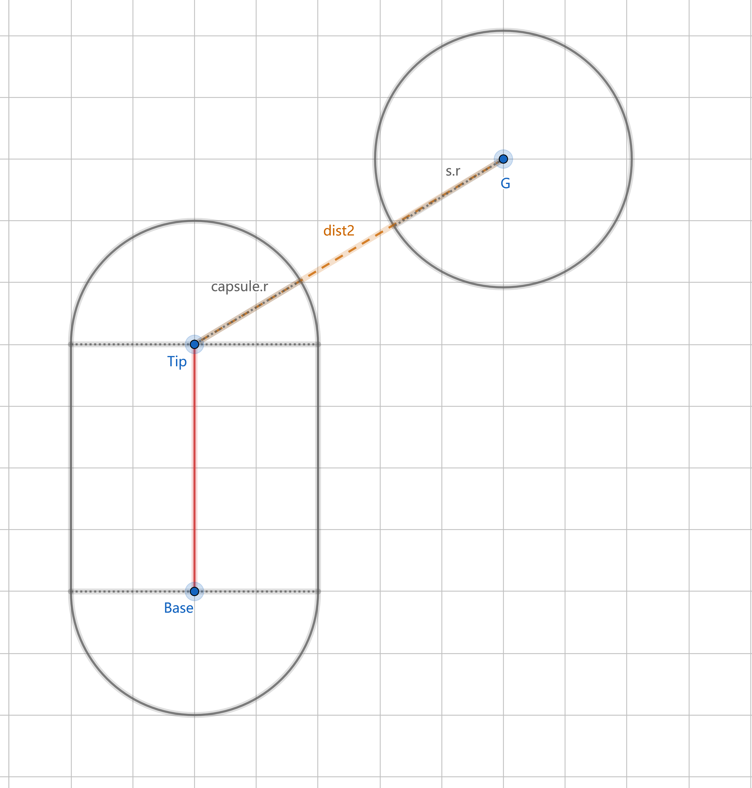
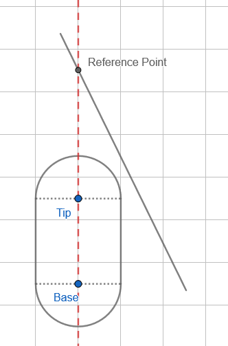

Introduction
What Is A Capsule?
The capsule collision is a simple extension to the sphere intersection test. A capsule is defined, in most cases, by a base point a and a tip point b.
A capsule collision can be defined like this:
$$
R = {x|(x - [a + (b - a) * t]) ^ 2 \leq r }, 0 \leq t \leq 1
$$

Why Is Capsule Important?
We can of course use cylinders as bounding volumes. Unfortunately, it turns out that the overlap test for cylinders is quite expensive.
As an alternative result, capsule shapes are wildly used in physics engines because of calculation simplicity. Thus it is always good to know what is happening deep inside when collisions are detected.
Collision Detection Methods
Sphere-Capsule Intersection
A useful property of capsules, or rather, sphere-swept volumes, is that the distance computation between the inner structures does not rely on the inner structures being of the same type.
So we only need to compare the shortest distance and the radius sum, and that’s it.

The code is like this:
1 | int TestSphereCapsule(Sphere s, Capsule capsule) |
Distance from point to a segment can be easily calculated by:
1 | // Returns the squared distance between point c and segment ab |
Or you may want the reference point value:
1 | void ClosestPtPointSegment(Point c, Point a, Point b, float &t, Point &d) |
Capsule-Capsule Intersection
It is natural to consider a capsule-capsule intersection as a problem to solve the distance between two segments:
1 | int TestCapsuleCapsule(Capsule capsule1, Capsule capsule2) |
This is much more complicated, however, to compute closest points of two segments.
I simply copy the code from Real Time Collision Detection here since this is not the point in this article:
1 | // Computes closest points C1 and C2 of S1(s)=P1+s*(Q1-P1) and |
Triangle-Capsule Intersection
Still we need to talk about triangle-capsule intersection.
First of all, we can find the closest point on a line to this triangle.

1 | float3 ClosestPointOnLineSegment(float3 A, float3 B, float3 Point) |
And this is how we find the reference point:
1 | // Determine whether line_plane_intersection is inside all triangle edges: |